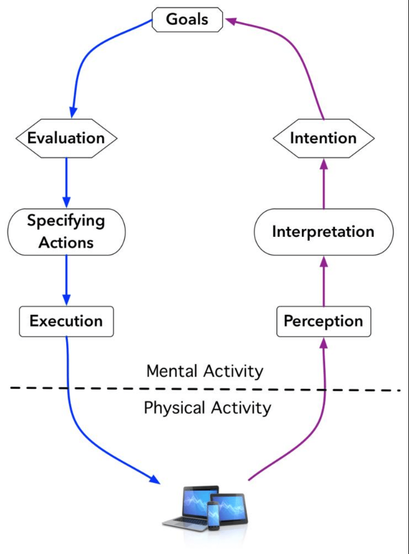
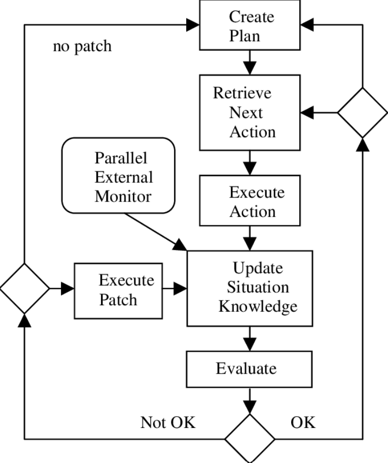
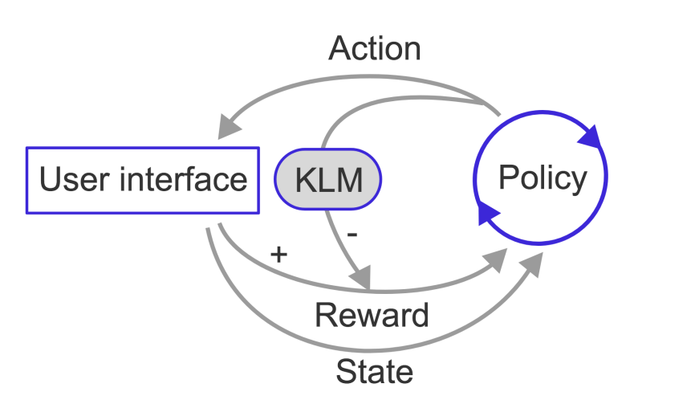

Purpose of This Assignment
This web demonstrates semantic HTML and accessibility fundamentals through the explanation of Norman’s Action Cycle, GOMS, and the Keystroke-Level Model.
Norman’s Action Cycle
|  |
Norman’s Action Cycle explains how users form goals, execute actions, and evaluate system feedback. The model highlights the gulfs of execution and evaluation, which reveal where interaction problems occur. |
GOMS Model Overview
|  |
GOMS describes user behavior in terms of goals, operators, methods, and selection rules. It is used to analyze expert, error-free task performance. |
Keystroke-Level Model (KLM)
|  |
The Keystroke-Level Model predicts task execution time by summing low-level operators such as keystrokes, pointing, and mental actions. |